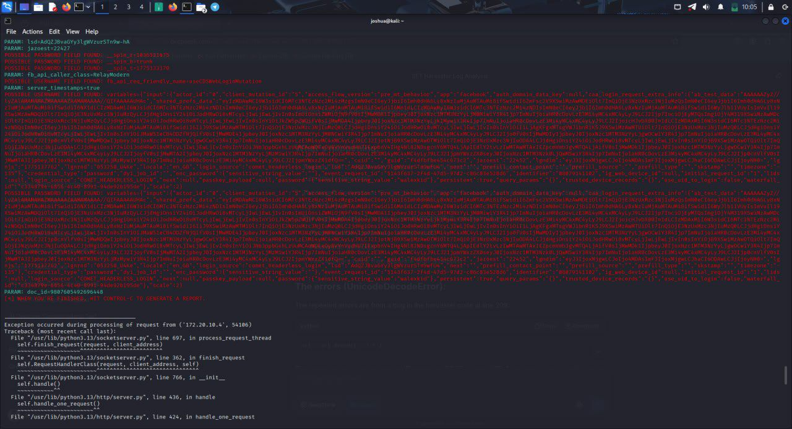

Passionate about threat monitoring and threat hunting, with a strong focus on incident triage and Blue Team Operations. I bring sharp analytical thinking, collaborative teamwork, and a relentless drive to defend digital environments from evolving threats.
I'm a dedicated cybersecurity professional based in Lagos, Nigeria, currently serving as a SOC Tier-1 Analyst. My journey into cybersecurity is driven by curiosity and a commitment to protecting systems and people from digital threats.
I bring a disciplined, methodical approach to security operations, which includes monitoring alerts, triaging incidents, analyzing logs, and communicating findings clearly. I thrive in team environments and value collaboration as the backbone of an effective SOC.
Olusegun Agagu University of Science & Technology
Okitipupa, Ondo State, Nigeria · 5 Years
Real-time SIEM monitoring, alert triage, and escalation workflows.
Rapid classification, prioritization, and first-response actions.
IOC identification, TTP mapping, and threat intelligence correlation.
Parsing and interpreting system, network, and application logs.
Clear incident reporting and stakeholder-ready documentation.
Kali Linux · Nessus · Metasploit · Wireshark · Ansible · Nmap
CIA Triad, network protocols, vulnerability management principles.
Candidate ID: COMP001022885450
Issued: Oct 31, 2025 · Exp: Oct 31, 2028
Certification #: 2677561
Since: Sep 1, 2025 · Exp: Aug 31, 2028

Conducted a phishing attack simulation using the SET Toolkit in a controlled lab environment. Replicated real-world credential harvesting by cloning a legitimate login page, then analyzed the attack from a SOC perspective, observing how convincing phishing interfaces can deceive users and capture sensitive credentials.
Performed a comprehensive Nessus vulnerability assessment on Linux systems and web applications. Configured credentialed SSH scans to audit Linux servers, ran web application scans on Nginx, documented CVEs and severity levels, and applied automated patch management with Ansible. Set up SMTP email reporting and compiled a stakeholder-ready report.
Have an opportunity, a question, or just want to connect? I'd love to hear from you.
Send Me an Email